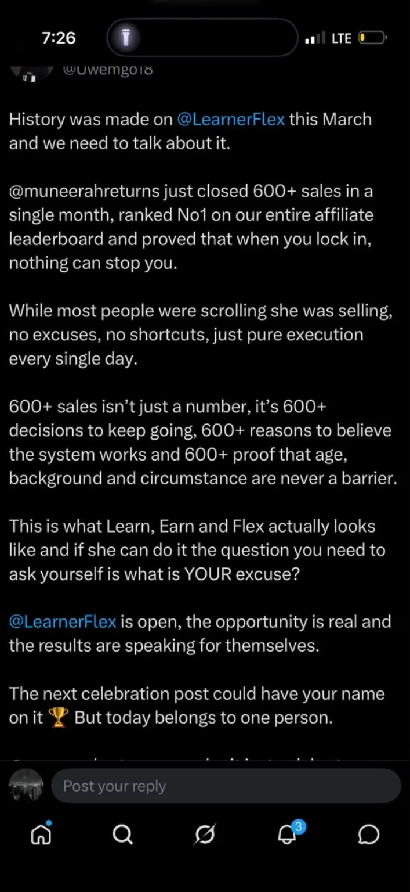
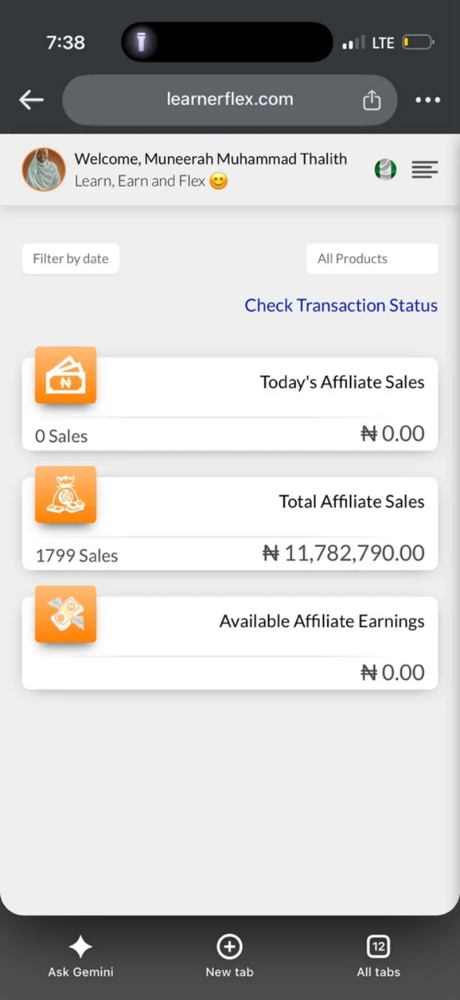
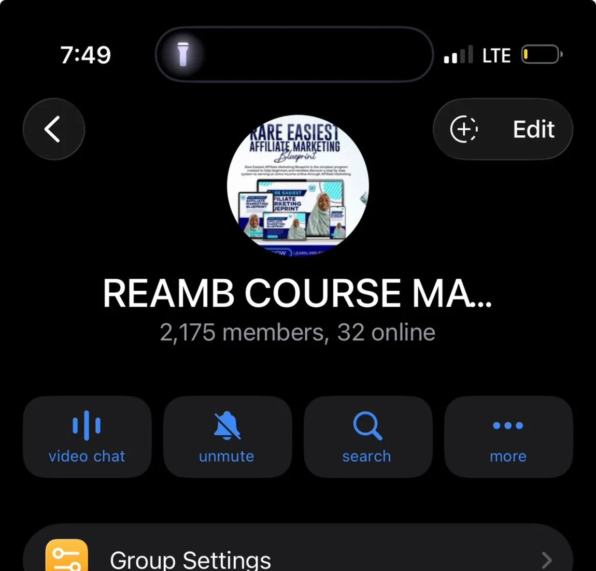
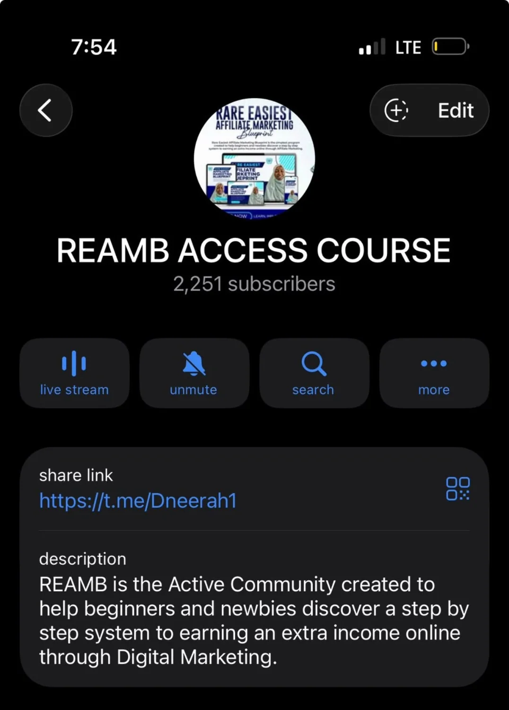
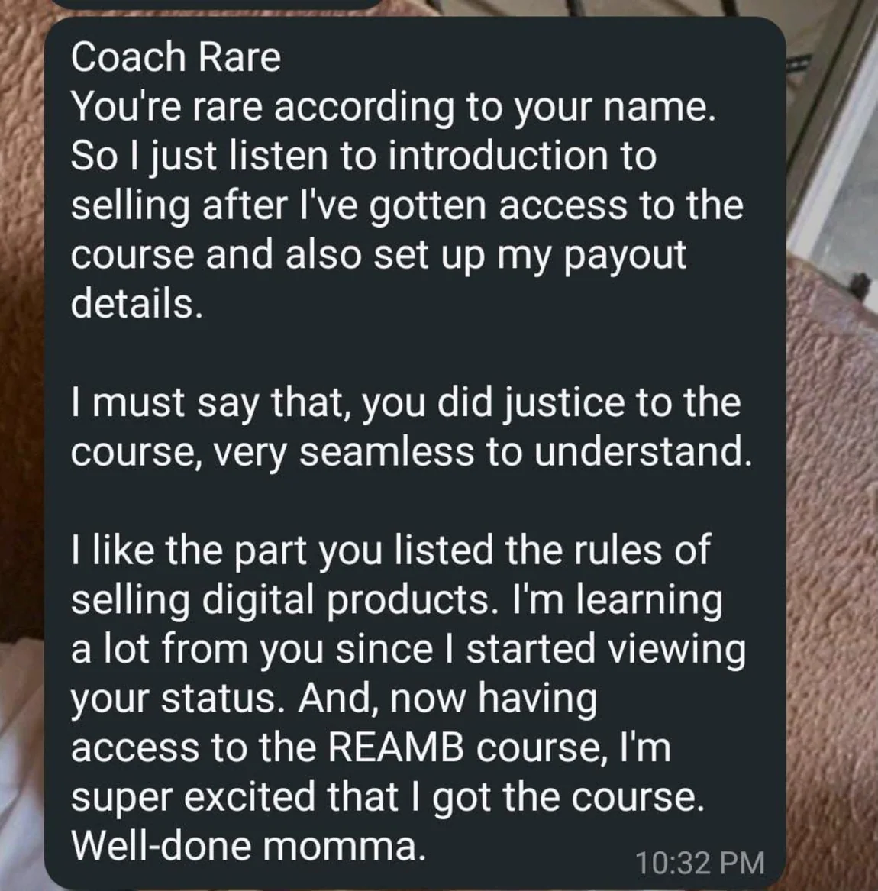
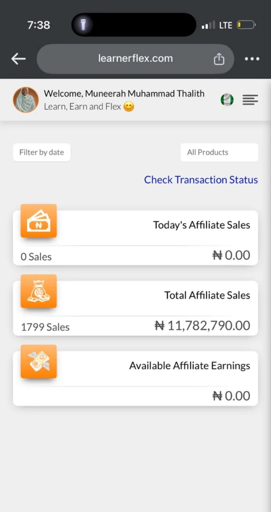
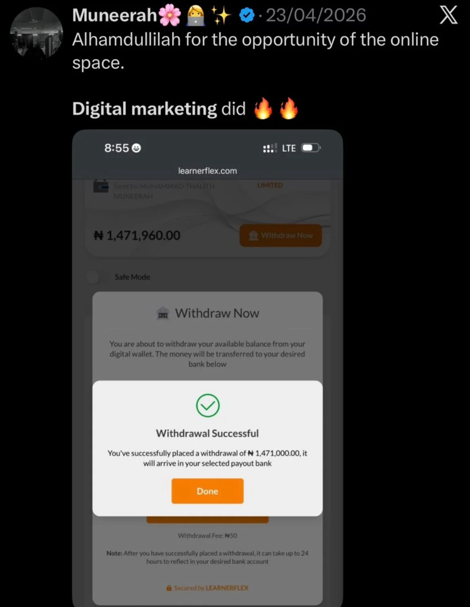
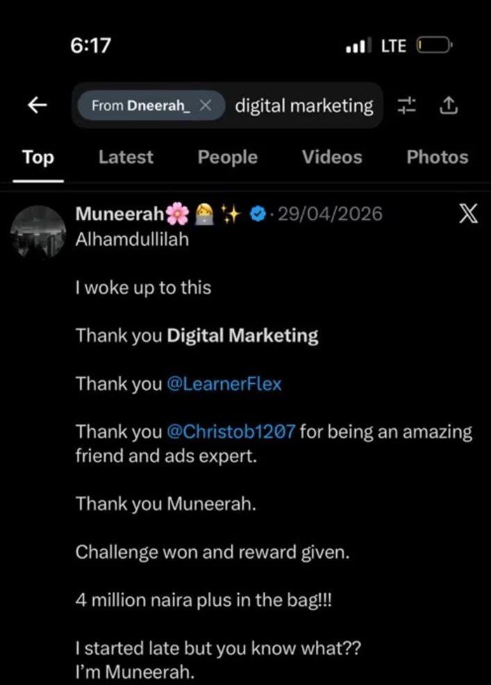

Recognition · March 2026
LearnerFlex March 2026 award
An award graphic recognizing Muneerah as the month’s No. 1 affiliate.
View source image ↗Selected source materials supplied for this portfolio. These are supporting screenshots, not third-party-audited records.
Explore a curated archive of awards, snapshots and public posts. Sources are grouped for recruiters and hiring teams.
Showing 11 pieces of evidence
An award graphic recognizing Muneerah as the month’s No. 1 affiliate.
View source image ↗
Screenshot of a public X post reporting 600+ March sales and a top ranking.
View source image ↗
Account screenshot bearing Muneerah’s name and showing 1,799 total affiliate sales at capture.
View source image ↗
A Telegram screenshot showing 1,261 community members.
View source image ↗
A Telegram group settings screenshot documents a 2,175-member learning community.
View source image ↗
Public-facing Telegram channel showing 2,251 subscribers and a community-learning description.
View source image ↗
A learner message commenting on the clarity of Muneerah’s digital marketing guidance. Shared without a name.
View source image ↗
A second view of Muneerah’s named dashboard showing 1,799 total sales at the time of capture.
View source image ↗
Recognition graphic naming Muneerah second place in the January–April 2026 sales challenge and displaying 1,458 sales.
View source image ↗
An April 23, 2026 X screenshot of a LearnerFlex withdrawal request successfully placed for ₦1,471,000. Bank settlement is not established by this image.
View source image ↗
A cropped public-post screenshot announcing a sales-challenge result. Earnings and reward claims in the original post are self-reported, not independently verified.
View source image ↗Maintained as a growing archive. New approved examples can be added without redesigning the site.